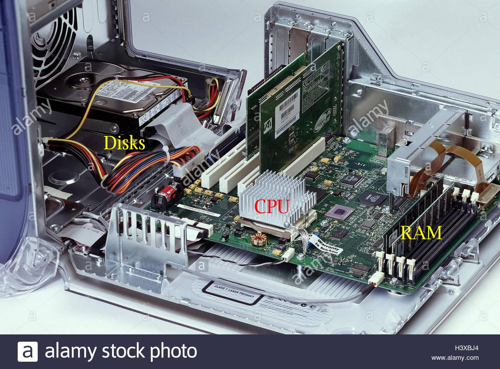
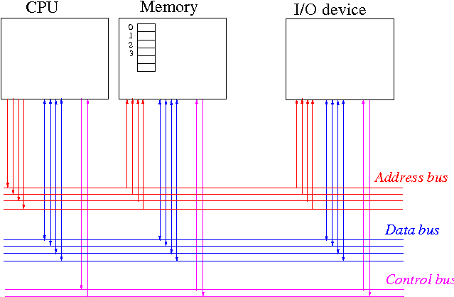

|  |
Notice that the different components are located apart from each other.
To perform the computing task, the different components in the computer need to communicate with each other (using electrical signals)
|  |
Explanation:
|
|
|
Computer buses inside a computer (terminology of computer science):
|